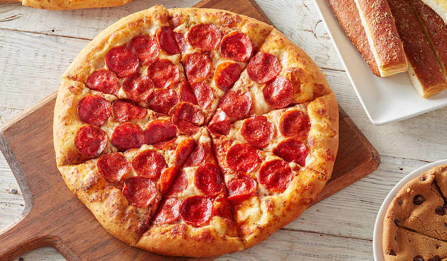

Homemade Pizza
| Ingredients | Steps |
|---|---|
| 2 1/2 cups warm water | 1. Bloom the yeast by sprinkling the sugar adn yeast in the warm water. Let sit for 1o minutes |
| 1 Teaspoon sugar | 2. In a large bowl, combine the flour and salt. Make a well in the middle and add the olive oil and bloomed yeast mixture |
| 2 Teaspoons active dry yeast | 3. Once the flour is mostly hydrated, turn the dough out onto a clean work surface and knead for 10-15 minutes |
| 7 Cups all-purpose flour, plus more for dusting | 4. Grease a clean, large bowl with olive oil and place the dough inside turning the coat with the oil |
| 6 Tablespoons extra virgin olive oil, plus more for greasing | 5. Punch down the dough and turn it out onto a lightly floured work surface. Then shape the dough into circles |
| 1 1/2 Teaspoons kosher salt | 6. Lightly flour the dough then preheat the oven to 450 degrees |
| 1/4 Cup semolina flour | 7. Make the tomato sauce by blending a can of tomatoes.Then add sauce and topping to the dough and place into oven for 15 minutes. |
| Ingreients | Steps |
|---|---|
| 1/2 Cup+2 tablespoons salted butter melted | 1. Preheat oven to 350 degrees. Line 9x9 pan with parchment paper |
| 1 Cup granualted sugar | 2. Pour melted butter into a large mixing bowl. Whisk in sugar by hand until smooth, 30 seconds |
| 2 large eggs | 3. Add eggs and vanilla extract. Whisk 1 minute. |
| 2 Teaspoons vanilla extract | 4. Whisk in melted chocolate until combined and smooth |
| 1/2 Cup melted milk chocalate chips | 5. Use a rubber spatula to stir in flour, cocoa powder, and salt until just combined |
| 3/4 Cup all-purpose flour | 6. Stir in whole chocoalte chips |
| 1/4 Cup unsweetened cocoa powder | 7. pour into prepared pan and smooth out |
| 1/2 Teaspoon salt | 8. Bake in the preheated oven for 30 minutes |
| 1 Cup milk chocolate chips | 9. Let cool in pan for 30 minutes before slicing. Enjoy! |

| Ingredients | Steps |
|---|---|
| 1 Cup butter, softened | 1. Preheat oven to 350 degrees |
| 1 Cup white sugar | 2. Cream together the butter, whote sugar, and brown sugar until smooth |
| 1 Cup packed brown sugar | 3. Beat in the eggs one at a time, then stir in the vanilla. |
| 2 Eggs | 4. Dissolve baking soda in hot water |
| 2 Teaspoons vanilla extract | 5. Add to batter along with the salt. |
| 1 Teapsoon baking soda | 6. Stir in flour, chocolate chips, and nuts |
| 2 Teapsoons hot water and 1/2 Teaspoon salt | 7. Drop by large spoon fulls onto ungreased pans |
| 3 Cups all purose flour | 8. Bake for about 10 minutes until edges are nicely browned |
| 2 Cups semisweet chocolate chis and 1 Cup chopped walnuts | 9. Finally slice brownies. Enjoy! |
| Ingredients | Steps |
|---|---|
| 15 Oz can pumpkin | 1. Preheat oven to 425 degrees |
| 14 Oz can EAGLE BRAND sweetened condensed milk | 2. Whisk pumpkin, sweetened condensed milk, eggs, spices, and slat into a medium bowl until smooth |
| 2 Large eggs | 3. Pour into crust. Bake for 15 minutes |
| 1 Teaspoon ground cinnamon | 4. Reduce oven temperature to 350 degrees and continue baking 35 to 40 minutes or until knife inserted 1 inch from crust comes out clean |
| 1/2 teaspoon ground ginger | 5. Let pie cool at room temperature for 10 to 15 minutes |
| 1/2 Teaspoon ground nutmeg and 1/2 Teaspoon salt | 6. Now you can eat as much pie as you want |
| 9 inch unbaked pie crust | 7. Finally store any leftovers in a refrigerator |